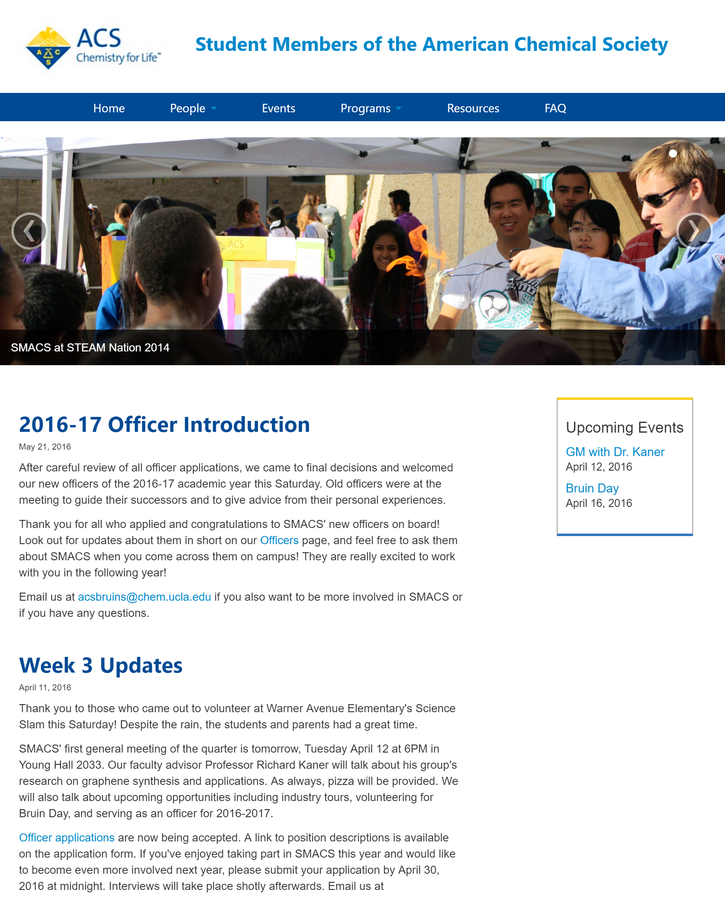
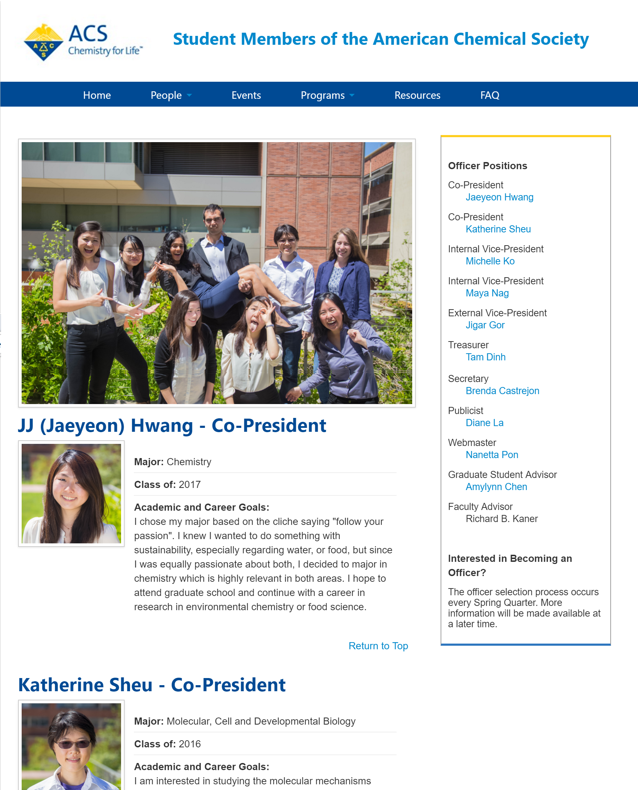
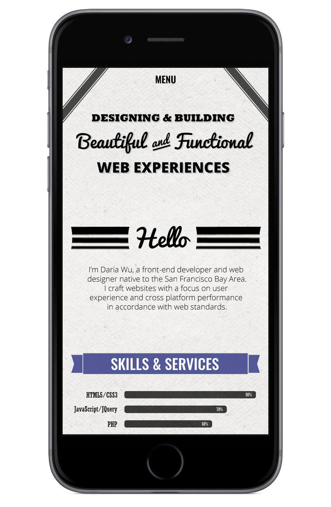
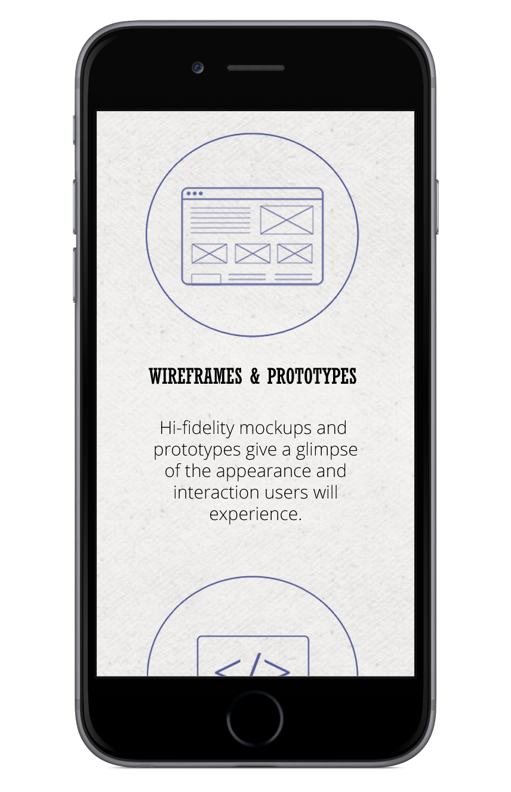

next →
Stashd
Web Design, Adobe Photoshop
Stashd is a web application that allows UCLA students to save and organize research articles and other important web content in a single easily accessible location. The Stashd landing page serves as an entry point for the app and an overview of the app's function and the development group. This mock-up was made in Adobe Photoshop. Graphics are property of Simul8 Group graphic artists.

← prevnext →
Daily Bruin Projects
HTML, CSS, JavaScript, JQuery, PHP, JSON, WordPress, Bootstrap
The Daily Bruin is the student newspaper of UCLA. During my time as a member of the Daily Bruin Online department I developed several web pages including:
1. Tiled list of Daily Bruin Online Features built with the Masonry Cascading Grid Layout. List items are pulled from a JSON list using JavaScript/JQuery. List can be dynamically filtered by category or year.
2. Blog styled opinion column page incorporated into existing WordPress framework with color coded headers to distinguish coloumn subject matter.


← prevnext →
ACS UCLA Chapter
HTML, CSS
SMACS is a UCLA club providing extracurricular education in chemistry topics and bringing students together in chemistry fairs and competitions. The SMACS website was redesigned to better provide news and resources to students and give club officers more control over site content.


← prevnext →
TANMS Engineering Research Center
HTML, CSS, JavaScript
TANMS is an engineering research center researching magnetism on the small scale. This site was built from scratch using HTML, CSS, and JavaScript to present news, research materials, and upcoming organization events.

← prevnext →
Beautiful and Functional Personal Site
Web Design, Adobe Photoshop
The Beautiful and Functional personal site is a theme I created in my spare time brainstorming ideas for my own personal site. Graphics were created by me using Adobe Photoshop and Illustrator.



← prev
Miscellaneous Graphics
Graphic Design, Adobe Photoshop
Here are some fun graphics I made in my spare time. Graphics were made in Adobe Photoshop and Illustrator.